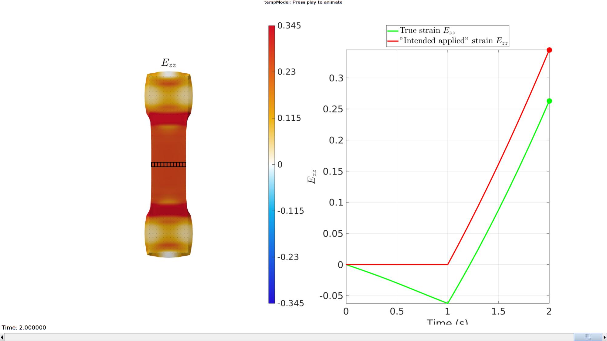

DEMO_febio_0065_clamp_tension_test
Below is a demonstration for: 1) The creation of an FEBio model for clamped tensile testing 2) The use of multiple steps 4) Running an FEBio job with MATLAB 5) Importing FEBio results into MATLAB
Contents
- Keywords
- Plot settings
- Control parameters
- Computing derived parameters
- Creating strip region
- Merging box sets
- Define clamping surfaces
- Define BC's
- Get logic for middle elements (to help investigate strain in the middle)
- Defining the FEBio input structure
- Quick viewing of the FEBio input file structure
- Exporting the FEBio input file
- Running the FEBio analysis
- Import FEBio results
- Compute grimp implied strain
Keywords
- febio_spec version 4.0
- febio, FEBio
- tension, tensile
- displacement control, displacement boundary condition
- Hexahedral hex8
- static, solid
- hyperelastic, Ogden
- displacement logfile
- stress logfile
clear; close all; clc;
Plot settings
fontSize=25;
Control parameters
% Path names defaultFolder = fileparts(fileparts(mfilename('fullpath'))); savePath=fullfile(defaultFolder,'data','temp'); % Defining file names febioFebFileNamePart='tempModel'; febioFebFileName=fullfile(savePath,[febioFebFileNamePart,'.feb']); %FEB file name febioLogFileName=fullfile(savePath,[febioFebFileNamePart,'.txt']); %FEBio log file name febioLogFileName_disp=[febioFebFileNamePart,'_disp_out.txt']; %Log file name for exporting displacement febioLogFileName_strain=[febioFebFileNamePart,'_energy_out.txt']; %Log file name for exporting strain energy density %Specifying dimensions and number of elements pointSpacing=1; sampleWidth=10; sampleThickness=2; sampleClampedHeight=sampleWidth; sampleGripGripHeight=sampleWidth.*2; appliedLinearStrain=0.3; clampCompressiveLinearStrain=0.3; %Initial material parameter set c1=1e-3; m1=2; k_factor=100; k=c1*k_factor; % FEA control settings numTimeSteps=10; %Number of time steps desired max_refs=25; %Max reforms max_ups=0; %Set to zero to use full-Newton iterations opt_iter=12; %Optimum number of iterations max_retries=25; %Maximum number of retires dtmin=(1/numTimeSteps)/100; %Minimum time step size dtmax=1/numTimeSteps; %Maximum time step size min_residual=1e-20; symmetric_stiffness=0; runMode='external'; %'internal' or 'external'
Computing derived parameters
numElementsWidth=ceil(sampleWidth/pointSpacing); numElementsWidth=numElementsWidth+iseven(numElementsWidth); %Force uneven so there is a middle element numElementsThickness=ceil(sampleThickness/pointSpacing)+1; numElementsGripGripHeight=ceil(sampleGripGripHeight/pointSpacing); numElementsGripGripHeight=numElementsGripGripHeight+iseven(numElementsGripGripHeight); %Force uneven so there is a middle element numElementsClampedHeight=ceil(sampleClampedHeight/pointSpacing); clampCompressiveDisplacement=(sampleThickness.*clampCompressiveLinearStrain)/2; clampTensionDisplacement=(sampleGripGripHeight.*appliedLinearStrain);
Creating strip region
The region consists of three "boxes" which define the upper and lower clamped regions as well as the central region.
%Create box 1 boxDim=[sampleWidth sampleThickness sampleClampedHeight]; %Dimensions boxEl=[numElementsWidth numElementsThickness numElementsClampedHeight]; %Number of elements [box1]=hexMeshBox(boxDim,boxEl); E1=box1.E; V1=box1.V; F1=box1.F; Fb1=box1.Fb; faceBoundaryMarker1=box1.faceBoundaryMarker; %Create box 3 by copying the first E3=E1; V3=V1; F3=F1; Fb3=Fb1; faceBoundaryMarker3=faceBoundaryMarker1; %Shift first box up V1(:,3)=V1(:,3)+sampleGripGripHeight/2+sampleClampedHeight/2; %Shift third box down V3(:,3)=V3(:,3)-sampleGripGripHeight/2-sampleClampedHeight/2; %Create box 2 boxDim=[sampleWidth sampleThickness sampleGripGripHeight]; %Dimensions boxEl=[numElementsWidth numElementsThickness numElementsGripGripHeight]; %Number of elements [box2]=hexMeshBox(boxDim,boxEl); E2=box2.E; V2=box2.V; F2=box2.F; Fb2=box2.Fb; faceBoundaryMarker2=box2.faceBoundaryMarker;
Merging box sets
%Join color data faceBoundaryMarker_all=[faceBoundaryMarker1; faceBoundaryMarker2; faceBoundaryMarker3;]; faceBoundaryMarker_ind=[ones(size(Fb1,1),1);2*ones(size(Fb2,1),1); 3*ones(size(Fb3,1),1);]; %Join nodes, elements, and faces V=[V1;V2;V3]; E=[E1;E2+size(V1,1);E3+size(V1,1)+size(V2,1)]; F=[F1;F2+size(V1,1);F3+size(V1,1)+size(V2,1)]; Fb=[Fb1;Fb2+size(V1,1);Fb3+size(V1,1)+size(V2,1)]; %Merge nodes [F,V,ind1,ind2]=mergeVertices(F,V); E=ind2(E); Fb=ind2(Fb);
Plotting surface models
cFigure; subplot(1,2,1); hold on; title('Merged box sets','FontSize',fontSize); gpatch(Fb,V,faceBoundaryMarker_all); axisGeom(gca,fontSize); colormap(gca,gjet(250)); icolorbar; subplot(1,2,2); hold on; title('Merged box sets','FontSize',fontSize); gpatch(Fb,V,faceBoundaryMarker_ind); axisGeom(gca,fontSize); colormap(gca,gjet(250)); icolorbar; drawnow;

Define clamping surfaces
logicContactSurf1=faceBoundaryMarker_all==3 & faceBoundaryMarker_ind==1; Fc1=Fb(logicContactSurf1,:); logicContactSurf2=faceBoundaryMarker_all==4 & faceBoundaryMarker_ind==1; Fc2=Fb(logicContactSurf2,:); logicContactSurf3=faceBoundaryMarker_all==4 & faceBoundaryMarker_ind==3; Fc3=Fb(logicContactSurf3,:); logicContactSurf4=faceBoundaryMarker_all==3 & faceBoundaryMarker_ind==3; Fc4=Fb(logicContactSurf4,:);
Visualize clamping surfaces
cFigure; hold on; title('Clamping surfaces','FontSize',fontSize); gpatch(Fb,V,'kw','none',0.25); hp(1)=gpatch(Fc1,V,'rw','k',1); hp(2)=gpatch(Fc2,V,'gw','k',1); hp(3)=gpatch(Fc3,V,'bw','k',1); hp(4)=gpatch(Fc4,V,'yw','k',1); legend(hp,{'Surf. 1','Surf. 2','Surf. 3','Surf. 4'}) axisGeom(gca,fontSize); camlight headlight; drawnow;

Define BC's
bcPrescribeList1=unique(Fc1(:)); % Nodes of surface 1 bcPrescribeList2=unique(Fc2(:)); % Nodes of surface 2 bcPrescribeList3=unique(Fc3(:)); % Nodes of surface 3 bcPrescribeList4=unique(Fc4(:)); % Nodes of surface 4
Visualize boundary conditions
cFigure; hold on; title('Complete model','FontSize',fontSize); gpatch(Fb,V,'kw','none',0.25); hp(1)=plotV(V(bcPrescribeList1,:),'r.','MarkerSize',25); hp(2)=plotV(V(bcPrescribeList2,:),'g.','MarkerSize',25); hp(3)=plotV(V(bcPrescribeList3,:),'b.','MarkerSize',25); hp(4)=plotV(V(bcPrescribeList4,:),'y.','MarkerSize',25); legend(hp,{'Node set 1','Node set 2','Node set 3','Node set 4'}) axisGeom(gca,fontSize); camlight headlight; drawnow;

Get logic for middle elements (to help investigate strain in the middle)
searchTol=pointSpacing/1000;
VE=patchCentre(E,V);
logicMiddleElements= VE(:,3)<searchTol & VE(:,3)>-searchTol;
[FM]=element2patch(E(logicMiddleElements,:),[],'hex8');
cFigure; hold on; gpatch(Fb,V,'kw','none',0.25); gpatch(FM,V,'rw','k',1); % hp(1)=plotV(V(bcPrescribeList1,:),'r.','MarkerSize',25); % legend(hp,{'Node set 1','Node set 2','Node set 3','Node set 4'}) axisGeom(gca,fontSize); camlight headlight; drawnow;

Defining the FEBio input structure
See also febioStructTemplate and febioStruct2xml and the FEBio user manual.
%Get a template with default settings [febio_spec]=febioStructTemplate; %febio_spec version febio_spec.ATTR.version='4.0'; %Module section febio_spec.Module.ATTR.type='solid'; %Create control structure for use by all steps stepStruct.Control.time_steps=numTimeSteps; stepStruct.Control.step_size=1/numTimeSteps; stepStruct.Control.solver.max_refs=max_refs; stepStruct.Control.time_stepper.dtmin=dtmin; stepStruct.Control.time_stepper.dtmax=dtmax; stepStruct.Control.time_stepper.max_retries=max_retries; stepStruct.Control.time_stepper.opt_iter=opt_iter; %Add template based default settings to proposed control section [stepStruct.Control]=structComplete(stepStruct.Control,febio_spec.Control,1); %Complement provided with default if missing %Remove control field (part of template) since step specific control sections are used febio_spec=rmfield(febio_spec,'Control'); febio_spec.Step.step{1}.Control=stepStruct.Control; febio_spec.Step.step{1}.ATTR.id=1; febio_spec.Step.step{2}.Control=stepStruct.Control; febio_spec.Step.step{2}.ATTR.id=2; %Material section materialName1='Material1'; febio_spec.Material.material{1}.ATTR.name=materialName1; febio_spec.Material.material{1}.ATTR.type='Ogden'; febio_spec.Material.material{1}.ATTR.id=1; febio_spec.Material.material{1}.c1=c1; febio_spec.Material.material{1}.m1=m1; febio_spec.Material.material{1}.c2=c1; febio_spec.Material.material{1}.m2=-m1; febio_spec.Material.material{1}.k=k; % Mesh section % -> Nodes febio_spec.Mesh.Nodes{1}.ATTR.name='Object1'; %The node set name febio_spec.Mesh.Nodes{1}.node.ATTR.id=(1:size(V,1))'; %The node id's febio_spec.Mesh.Nodes{1}.node.VAL=V; %The nodel coordinates % -> Elements partName1='Part1'; febio_spec.Mesh.Elements{1}.ATTR.name=partName1; %Name of this part febio_spec.Mesh.Elements{1}.ATTR.type='hex8'; %Element type febio_spec.Mesh.Elements{1}.elem.ATTR.id=(1:1:size(E,1))'; %Element id's febio_spec.Mesh.Elements{1}.elem.VAL=E; %The element matrix % -> NodeSets nodeSetName1='bcPrescribeList1'; febio_spec.Mesh.NodeSet{1}.ATTR.name=nodeSetName1; febio_spec.Mesh.NodeSet{1}.VAL=mrow(bcPrescribeList1); nodeSetName2='bcPrescribeList2'; febio_spec.Mesh.NodeSet{2}.ATTR.name=nodeSetName2; febio_spec.Mesh.NodeSet{2}.VAL=mrow(bcPrescribeList2); nodeSetName3='bcPrescribeList3'; febio_spec.Mesh.NodeSet{3}.ATTR.name=nodeSetName3; febio_spec.Mesh.NodeSet{3}.VAL=mrow(bcPrescribeList3); nodeSetName4='bcPrescribeList4'; febio_spec.Mesh.NodeSet{4}.ATTR.name=nodeSetName4; febio_spec.Mesh.NodeSet{4}.VAL=mrow(bcPrescribeList4); %MeshDomains section febio_spec.MeshDomains.SolidDomain.ATTR.name=partName1; febio_spec.MeshDomains.SolidDomain.ATTR.mat=materialName1; %Boundary condition section %STEP 1: Clamping compression ------------------------------------------- %Set 1 % Set 1 compression febio_spec.Step.step{1}.Boundary.bc{1}.ATTR.name='bcPrescribeList01_01'; febio_spec.Step.step{1}.Boundary.bc{1}.ATTR.type='prescribed displacement'; febio_spec.Step.step{1}.Boundary.bc{1}.ATTR.node_set=nodeSetName1; febio_spec.Step.step{1}.Boundary.bc{1}.dof='y'; febio_spec.Step.step{1}.Boundary.bc{1}.value.ATTR.lc=1; febio_spec.Step.step{1}.Boundary.bc{1}.value.VAL=clampCompressiveDisplacement; febio_spec.Step.step{1}.Boundary.bc{1}.relative=1; febio_spec.Step.step{1}.Boundary.bc{2}.ATTR.name='FixedDisplacement01_01'; febio_spec.Step.step{1}.Boundary.bc{2}.ATTR.type='zero displacement'; febio_spec.Step.step{1}.Boundary.bc{2}.ATTR.node_set=nodeSetName1; febio_spec.Step.step{1}.Boundary.bc{2}.x_dof=1; febio_spec.Step.step{1}.Boundary.bc{2}.y_dof=0; febio_spec.Step.step{1}.Boundary.bc{2}.z_dof=1; % Set 2 compression febio_spec.Step.step{1}.Boundary.bc{3}.ATTR.name='bcPrescribeList02_01'; febio_spec.Step.step{1}.Boundary.bc{3}.ATTR.type='prescribed displacement'; febio_spec.Step.step{1}.Boundary.bc{3}.ATTR.node_set=nodeSetName2; febio_spec.Step.step{1}.Boundary.bc{3}.dof='y'; febio_spec.Step.step{1}.Boundary.bc{3}.value.ATTR.lc=1; febio_spec.Step.step{1}.Boundary.bc{3}.value.VAL=-clampCompressiveDisplacement; febio_spec.Step.step{1}.Boundary.bc{3}.relative=1; febio_spec.Step.step{1}.Boundary.bc{4}.ATTR.name='FixedDisplacement02_01'; febio_spec.Step.step{1}.Boundary.bc{4}.ATTR.type='zero displacement'; febio_spec.Step.step{1}.Boundary.bc{4}.ATTR.node_set=nodeSetName2; febio_spec.Step.step{1}.Boundary.bc{4}.x_dof=1; febio_spec.Step.step{1}.Boundary.bc{4}.y_dof=0; febio_spec.Step.step{1}.Boundary.bc{4}.z_dof=1; % Set 3 compression febio_spec.Step.step{1}.Boundary.bc{5}.ATTR.name='bcPrescribeList03_01'; febio_spec.Step.step{1}.Boundary.bc{5}.ATTR.type='prescribed displacement'; febio_spec.Step.step{1}.Boundary.bc{5}.ATTR.node_set=nodeSetName3; febio_spec.Step.step{1}.Boundary.bc{5}.dof='y'; febio_spec.Step.step{1}.Boundary.bc{5}.value.ATTR.lc=1; febio_spec.Step.step{1}.Boundary.bc{5}.value.VAL=-clampCompressiveDisplacement; febio_spec.Step.step{1}.Boundary.bc{5}.relative=1; febio_spec.Step.step{1}.Boundary.bc{6}.ATTR.name='FixedDisplacement03_01'; febio_spec.Step.step{1}.Boundary.bc{6}.ATTR.type='zero displacement'; febio_spec.Step.step{1}.Boundary.bc{6}.ATTR.node_set=nodeSetName3; febio_spec.Step.step{1}.Boundary.bc{6}.x_dof=1; febio_spec.Step.step{1}.Boundary.bc{6}.y_dof=0; febio_spec.Step.step{1}.Boundary.bc{6}.z_dof=1; % Set 4 compression febio_spec.Step.step{1}.Boundary.bc{7}.ATTR.name='bcPrescribeList04_01'; febio_spec.Step.step{1}.Boundary.bc{7}.ATTR.type='prescribed displacement'; febio_spec.Step.step{1}.Boundary.bc{7}.ATTR.node_set=nodeSetName4; febio_spec.Step.step{1}.Boundary.bc{7}.dof='y'; febio_spec.Step.step{1}.Boundary.bc{7}.value.ATTR.lc=1; febio_spec.Step.step{1}.Boundary.bc{7}.value.VAL=clampCompressiveDisplacement; febio_spec.Step.step{1}.Boundary.bc{7}.relative=1; febio_spec.Step.step{1}.Boundary.bc{8}.ATTR.name='FixedDisplacement04_01'; febio_spec.Step.step{1}.Boundary.bc{8}.ATTR.type='zero displacement'; febio_spec.Step.step{1}.Boundary.bc{8}.ATTR.node_set=nodeSetName4; febio_spec.Step.step{1}.Boundary.bc{8}.x_dof=1; febio_spec.Step.step{1}.Boundary.bc{8}.y_dof=0; febio_spec.Step.step{1}.Boundary.bc{8}.z_dof=1; %STEP 2 Tension ------------------------------------------- % Set 1 tension febio_spec.Step.step{2}.Boundary.bc{1}.ATTR.name='bcPrescribeList01_02'; febio_spec.Step.step{2}.Boundary.bc{1}.ATTR.type='prescribed displacement'; febio_spec.Step.step{2}.Boundary.bc{1}.ATTR.node_set=nodeSetName1; febio_spec.Step.step{2}.Boundary.bc{1}.dof='x'; febio_spec.Step.step{2}.Boundary.bc{1}.value.ATTR.lc=1; febio_spec.Step.step{2}.Boundary.bc{1}.value.VAL=0; febio_spec.Step.step{2}.Boundary.bc{1}.relative=1; febio_spec.Step.step{2}.Boundary.bc{2}.ATTR.name='bcPrescribeList02_02'; febio_spec.Step.step{2}.Boundary.bc{2}.ATTR.type='prescribed displacement'; febio_spec.Step.step{2}.Boundary.bc{2}.ATTR.node_set=nodeSetName1; febio_spec.Step.step{2}.Boundary.bc{2}.dof='y'; febio_spec.Step.step{2}.Boundary.bc{2}.value.ATTR.lc=1; febio_spec.Step.step{2}.Boundary.bc{2}.value.VAL=0; febio_spec.Step.step{2}.Boundary.bc{2}.relative=1; febio_spec.Step.step{2}.Boundary.bc{3}.ATTR.name='bcPrescribeList03_02'; febio_spec.Step.step{2}.Boundary.bc{3}.ATTR.type='prescribed displacement'; febio_spec.Step.step{2}.Boundary.bc{3}.ATTR.node_set=nodeSetName1; febio_spec.Step.step{2}.Boundary.bc{3}.dof='z'; febio_spec.Step.step{2}.Boundary.bc{3}.value.ATTR.lc=2; febio_spec.Step.step{2}.Boundary.bc{3}.value.VAL=clampTensionDisplacement; febio_spec.Step.step{2}.Boundary.bc{3}.relative=1; % Set 2 tension febio_spec.Step.step{2}.Boundary.bc{4}.ATTR.name='bcPrescribeList04_02'; febio_spec.Step.step{2}.Boundary.bc{4}.ATTR.type='prescribed displacement'; febio_spec.Step.step{2}.Boundary.bc{4}.ATTR.node_set=nodeSetName2; febio_spec.Step.step{2}.Boundary.bc{4}.dof='x'; febio_spec.Step.step{2}.Boundary.bc{4}.value.ATTR.lc=1; febio_spec.Step.step{2}.Boundary.bc{4}.value.VAL=0; febio_spec.Step.step{2}.Boundary.bc{4}.relative=1; febio_spec.Step.step{2}.Boundary.bc{5}.ATTR.name='bcPrescribeList05_02'; febio_spec.Step.step{2}.Boundary.bc{5}.ATTR.type='prescribed displacement'; febio_spec.Step.step{2}.Boundary.bc{5}.ATTR.node_set=nodeSetName2; febio_spec.Step.step{2}.Boundary.bc{5}.dof='y'; febio_spec.Step.step{2}.Boundary.bc{5}.value.ATTR.lc=1; febio_spec.Step.step{2}.Boundary.bc{5}.value.VAL=0; febio_spec.Step.step{2}.Boundary.bc{5}.relative=1; febio_spec.Step.step{2}.Boundary.bc{6}.ATTR.name='bcPrescribeList06_02'; febio_spec.Step.step{2}.Boundary.bc{6}.ATTR.type='prescribed displacement'; febio_spec.Step.step{2}.Boundary.bc{6}.ATTR.node_set=nodeSetName2; febio_spec.Step.step{2}.Boundary.bc{6}.dof='z'; febio_spec.Step.step{2}.Boundary.bc{6}.value.ATTR.lc=2; febio_spec.Step.step{2}.Boundary.bc{6}.value.VAL=clampTensionDisplacement; febio_spec.Step.step{2}.Boundary.bc{6}.relative=1; % Set 3 tension febio_spec.Step.step{2}.Boundary.bc{7}.ATTR.name='bcPrescribeList07_02'; febio_spec.Step.step{2}.Boundary.bc{7}.ATTR.type='prescribed displacement'; febio_spec.Step.step{2}.Boundary.bc{7}.ATTR.node_set=nodeSetName3; febio_spec.Step.step{2}.Boundary.bc{7}.dof='x'; febio_spec.Step.step{2}.Boundary.bc{7}.value.ATTR.lc=1; febio_spec.Step.step{2}.Boundary.bc{7}.value.VAL=0; febio_spec.Step.step{2}.Boundary.bc{7}.relative=1; febio_spec.Step.step{2}.Boundary.bc{8}.ATTR.name='bcPrescribeList08_02'; febio_spec.Step.step{2}.Boundary.bc{8}.ATTR.type='prescribed displacement'; febio_spec.Step.step{2}.Boundary.bc{8}.ATTR.node_set=nodeSetName3; febio_spec.Step.step{2}.Boundary.bc{8}.dof='y'; febio_spec.Step.step{2}.Boundary.bc{8}.value.ATTR.lc=1; febio_spec.Step.step{2}.Boundary.bc{8}.value.VAL=0; febio_spec.Step.step{2}.Boundary.bc{8}.relative=1; febio_spec.Step.step{2}.Boundary.bc{9}.ATTR.name='bcPrescribeList09_02'; febio_spec.Step.step{2}.Boundary.bc{9}.ATTR.type='prescribed displacement'; febio_spec.Step.step{2}.Boundary.bc{9}.ATTR.node_set=nodeSetName3; febio_spec.Step.step{2}.Boundary.bc{9}.dof='z'; febio_spec.Step.step{2}.Boundary.bc{9}.value.ATTR.lc=1; febio_spec.Step.step{2}.Boundary.bc{9}.value.VAL=0; febio_spec.Step.step{2}.Boundary.bc{9}.relative=1; % Set 4 tension febio_spec.Step.step{2}.Boundary.bc{10}.ATTR.name='bcPrescribeList10_02'; febio_spec.Step.step{2}.Boundary.bc{10}.ATTR.type='prescribed displacement'; febio_spec.Step.step{2}.Boundary.bc{10}.ATTR.node_set=nodeSetName4; febio_spec.Step.step{2}.Boundary.bc{10}.dof='x'; febio_spec.Step.step{2}.Boundary.bc{10}.value.ATTR.lc=1; febio_spec.Step.step{2}.Boundary.bc{10}.value.VAL=0; febio_spec.Step.step{2}.Boundary.bc{10}.relative=1; febio_spec.Step.step{2}.Boundary.bc{11}.ATTR.name='bcPrescribeList11_02'; febio_spec.Step.step{2}.Boundary.bc{11}.ATTR.type='prescribed displacement'; febio_spec.Step.step{2}.Boundary.bc{11}.ATTR.node_set=nodeSetName4; febio_spec.Step.step{2}.Boundary.bc{11}.dof='y'; febio_spec.Step.step{2}.Boundary.bc{11}.value.ATTR.lc=1; febio_spec.Step.step{2}.Boundary.bc{11}.value.VAL=0; febio_spec.Step.step{2}.Boundary.bc{11}.relative=1; febio_spec.Step.step{2}.Boundary.bc{12}.ATTR.name='bcPrescribeList12_02'; febio_spec.Step.step{2}.Boundary.bc{12}.ATTR.type='prescribed displacement'; febio_spec.Step.step{2}.Boundary.bc{12}.ATTR.node_set=nodeSetName4; febio_spec.Step.step{2}.Boundary.bc{12}.dof='z'; febio_spec.Step.step{2}.Boundary.bc{12}.value.ATTR.lc=1; febio_spec.Step.step{2}.Boundary.bc{12}.value.VAL=0; febio_spec.Step.step{2}.Boundary.bc{12}.relative=1; %LoadData section % -> load_controller febio_spec.LoadData.load_controller{1}.ATTR.name='LC_1'; febio_spec.LoadData.load_controller{1}.ATTR.id=1; febio_spec.LoadData.load_controller{1}.ATTR.type='loadcurve'; febio_spec.LoadData.load_controller{1}.interpolate='LINEAR'; %febio_spec.LoadData.load_controller{1}.extend='CONSTANT'; febio_spec.LoadData.load_controller{1}.points.pt.VAL=[0 0; 1 1; 2 1]; %LoadData section % -> load_controller febio_spec.LoadData.load_controller{2}.ATTR.name='LC_2'; febio_spec.LoadData.load_controller{2}.ATTR.id=2; febio_spec.LoadData.load_controller{2}.ATTR.type='loadcurve'; febio_spec.LoadData.load_controller{2}.interpolate='LINEAR'; %febio_spec.LoadData.load_controller{2}.extend='CONSTANT'; febio_spec.LoadData.load_controller{2}.points.pt.VAL=[0 0; 1 0; 2 1]; %Output section % -> log file febio_spec.Output.logfile.ATTR.file=febioLogFileName; febio_spec.Output.logfile.node_data{1}.ATTR.file=febioLogFileName_disp; febio_spec.Output.logfile.node_data{1}.ATTR.data='ux;uy;uz'; febio_spec.Output.logfile.node_data{1}.ATTR.delim=','; febio_spec.Output.logfile.element_data{1}.ATTR.file=febioLogFileName_strain; febio_spec.Output.logfile.element_data{1}.ATTR.data='Ez'; febio_spec.Output.logfile.element_data{1}.ATTR.delim=','; % Plotfile section febio_spec.Output.plotfile.compression=0;
Quick viewing of the FEBio input file structure
The febView function can be used to view the xml structure in a MATLAB figure window.
febView(febio_spec); %Viewing the febio file
Exporting the FEBio input file
Exporting the febio_spec structure to an FEBio input file is done using the febioStruct2xml function.
febioStruct2xml(febio_spec,febioFebFileName); %Exporting to file and domNode
Running the FEBio analysis
To run the analysis defined by the created FEBio input file the runMonitorFEBio function is used. The input for this function is a structure defining job settings e.g. the FEBio input file name. The optional output runFlag informs the user if the analysis was run succesfully.
febioAnalysis.run_filename=febioFebFileName; %The input file name febioAnalysis.run_logname=febioLogFileName; %The name for the log file febioAnalysis.disp_on=1; %Display information on the command window febioAnalysis.runMode=runMode; febioAnalysis.maxLogCheckTime=120; %Max log file checking time [runFlag]=runMonitorFEBio(febioAnalysis);%START FEBio NOW!!!!!!!!
%%%%%%%%%%%%%%%%%%%%%%%%%%%%%%%%%%%%%%%%%%%%%%%%%%%%%%%%%%%%%%%%%%%%%%%%%%%
--------> RUNNING/MONITORING FEBIO JOB <-------- 30-Apr-2023 08:47:50
FEBio path: /home/kevin/FEBioStudio/bin/febio4
# Attempt removal of existing log files 30-Apr-2023 08:47:50
* Removal succesful 30-Apr-2023 08:47:50
# Attempt removal of existing .xplt files 30-Apr-2023 08:47:50
* Removal succesful 30-Apr-2023 08:47:50
# Starting FEBio... 30-Apr-2023 08:47:50
Max. total analysis time is: Inf s
* Waiting for log file creation 30-Apr-2023 08:47:50
Max. wait time: 120 s
* Log file found. 30-Apr-2023 08:47:50
# Parsing log file... 30-Apr-2023 08:47:50
number of iterations : 3 30-Apr-2023 08:47:51
number of reformations : 3 30-Apr-2023 08:47:51
------- converged at time : 0.1 30-Apr-2023 08:47:51
number of iterations : 4 30-Apr-2023 08:47:51
number of reformations : 4 30-Apr-2023 08:47:51
------- converged at time : 0.2 30-Apr-2023 08:47:51
number of iterations : 4 30-Apr-2023 08:47:51
number of reformations : 4 30-Apr-2023 08:47:51
------- converged at time : 0.3 30-Apr-2023 08:47:51
number of iterations : 4 30-Apr-2023 08:47:51
number of reformations : 4 30-Apr-2023 08:47:51
------- converged at time : 0.4 30-Apr-2023 08:47:51
number of iterations : 4 30-Apr-2023 08:47:51
number of reformations : 4 30-Apr-2023 08:47:51
------- converged at time : 0.5 30-Apr-2023 08:47:51
number of iterations : 4 30-Apr-2023 08:47:51
number of reformations : 4 30-Apr-2023 08:47:51
------- converged at time : 0.6 30-Apr-2023 08:47:51
number of iterations : 4 30-Apr-2023 08:47:51
number of reformations : 4 30-Apr-2023 08:47:51
------- converged at time : 0.7 30-Apr-2023 08:47:51
number of iterations : 4 30-Apr-2023 08:47:51
number of reformations : 4 30-Apr-2023 08:47:51
------- converged at time : 0.8 30-Apr-2023 08:47:51
number of iterations : 4 30-Apr-2023 08:47:52
number of reformations : 4 30-Apr-2023 08:47:52
------- converged at time : 0.9 30-Apr-2023 08:47:52
number of iterations : 4 30-Apr-2023 08:47:52
number of reformations : 4 30-Apr-2023 08:47:52
------- converged at time : 1 30-Apr-2023 08:47:52
number of iterations : 3 30-Apr-2023 08:47:52
number of reformations : 3 30-Apr-2023 08:47:52
------- converged at time : 1.1 30-Apr-2023 08:47:52
number of iterations : 3 30-Apr-2023 08:47:52
number of reformations : 3 30-Apr-2023 08:47:52
------- converged at time : 1.2 30-Apr-2023 08:47:52
number of iterations : 3 30-Apr-2023 08:47:52
number of reformations : 3 30-Apr-2023 08:47:52
------- converged at time : 1.3 30-Apr-2023 08:47:52
number of iterations : 3 30-Apr-2023 08:47:52
number of reformations : 3 30-Apr-2023 08:47:52
------- converged at time : 1.4 30-Apr-2023 08:47:52
number of iterations : 3 30-Apr-2023 08:47:52
number of reformations : 3 30-Apr-2023 08:47:52
------- converged at time : 1.5 30-Apr-2023 08:47:52
number of iterations : 3 30-Apr-2023 08:47:52
number of reformations : 3 30-Apr-2023 08:47:52
------- converged at time : 1.6 30-Apr-2023 08:47:52
number of iterations : 3 30-Apr-2023 08:47:52
number of reformations : 3 30-Apr-2023 08:47:52
------- converged at time : 1.7 30-Apr-2023 08:47:52
number of iterations : 3 30-Apr-2023 08:47:52
number of reformations : 3 30-Apr-2023 08:47:52
------- converged at time : 1.8 30-Apr-2023 08:47:52
number of iterations : 3 30-Apr-2023 08:47:52
number of reformations : 3 30-Apr-2023 08:47:52
------- converged at time : 1.9 30-Apr-2023 08:47:52
number of iterations : 3 30-Apr-2023 08:47:52
number of reformations : 3 30-Apr-2023 08:47:52
------- converged at time : 2 30-Apr-2023 08:47:52
Elapsed time : 0:00:02 30-Apr-2023 08:47:52
N O R M A L T E R M I N A T I O N
# Done 30-Apr-2023 08:47:52
%%%%%%%%%%%%%%%%%%%%%%%%%%%%%%%%%%%%%%%%%%%%%%%%%%%%%%%%%%%%%%%%%%%%%%%%%%%
Import FEBio results
if runFlag==1 %i.e. a succesful run
Importing nodal displacements from a log file
dataStruct=importFEBio_logfile(fullfile(savePath,febioLogFileName_disp),0,1);
%Access data
N_disp_mat=dataStruct.data; %Displacement
timeVec=dataStruct.time; %Time
%Create deformed coordinate set
V_DEF=N_disp_mat+repmat(V,[1 1 size(N_disp_mat,3)]);
Importing element strain data from a log file
dataStruct=importFEBio_logfile(fullfile(savePath,febioLogFileName_strain),0,1);
%Access data
E_strain=dataStruct.data;
[F,CF]=element2patch(E,E_strain(:,:,end));
CV=faceToVertexMeasure(F,V,CF);
E_strain_middle_mean=squeeze(mean(E_strain(logicMiddleElements,:,:),1));
Compute grimp implied strain
gripStrainLinear=double(timeVec>1).*(timeVec-1).*appliedLinearStrain;
gripStrain=1/2*((gripStrainLinear+1).^2-1); %Green-Lagrange strain
maxGridStrain=max(abs(gripStrain));
Plotting the simulated results using anim8 to visualize and animate deformations
indBc=[bcPrescribeList1;bcPrescribeList2;bcPrescribeList3;bcPrescribeList4;];
% Create basic view and store graphics handle to initiate animation
hf=cFigure; hold on;%Open figure
gtitle([febioFebFileNamePart,': Press play to animate']);
title('$E_{zz}$','Interpreter','Latex')
hp1=gpatch(Fb,V_DEF(:,:,end),CV,'k',1);
hp1.FaceColor='interp';
hp2=plotV(V(indBc,:),'k.','MarkerSize',25);
axisGeom(gca,fontSize);
colormap(warmcold(250)); hc=colorbar;
caxis([-maxGridStrain maxGridStrain]);
hc.Ticks=linspace(-maxGridStrain,maxGridStrain,7);
axis(axisLim(V_DEF)); %Set axis limits statically
camlight headlight; axis off;
% Set up animation features
animStruct.Time=timeVec; %The time vector
for qt=1:1:size(N_disp_mat,3) %Loop over time increments
CV=faceToVertexMeasure(E,V,E_strain(:,:,qt));
%Set entries in animation structure
animStruct.Handles{qt}=[hp1 hp1 hp2 hp2 hp2]; %Handles of objects to animate
animStruct.Props{qt}={'Vertices','CData','XData','YData','ZData'}; %Properties of objects to animate
animStruct.Set{qt}={V_DEF(:,:,qt),CV,V_DEF(indBc,1,qt),V_DEF(indBc,2,qt),V_DEF(indBc,3,qt)}; %Property values for to set in order to animate
end
anim8(hf,animStruct); %Initiate animation feature
gdrawnow;
Plotting the simulated results using anim8 to visualize and animate deformations
indBc=[bcPrescribeList1;bcPrescribeList2;bcPrescribeList3;bcPrescribeList4;];
% Create basic view and store graphics handle to initiate animation
hf=cFigure;
subplot(1,2,1); hold on;
title('$E_{zz}$','Interpreter','Latex');
gtitle([febioFebFileNamePart,': Press play to animate']);
hp1=gpatch(Fb,V_DEF(:,:,end),CV,'none',1,0.5); hp1.FaceColor='interp';
hp2=plotV(V_DEF(indBc,:,end),'k.','MarkerSize',1);
hp3=gpatch(FM,V_DEF(:,:,end),CV,'k',1,2); hp3.FaceColor='interp';
colormap(warmcold(250)); hc=colorbar;
caxis([-maxGridStrain maxGridStrain]);
hc.Ticks=linspace(-maxGridStrain,maxGridStrain,7);
axisGeom(gca,fontSize); camlight headlight;
axis(axisLim(V_DEF)); %Set axis limits statically
view(0,0); axis off;
subplot(1,2,2); hold on;
xlabel('Time (s)'); ylabel('$E_{zz}$','Interpreter','Latex');
hpl4=plot(timeVec,E_strain_middle_mean,'g.-','LineWidth',3);
hpl5=plot(timeVec,gripStrain,'r.-','LineWidth',3);
hp4=plot(timeVec(end),E_strain_middle_mean(end),'g.','MarkerSize',50);
hp5=plot(timeVec(end),gripStrain(end),'r.','MarkerSize',50);
legend([hpl4 hpl5],{'True strain $E_{zz}$','"Intended applied" strain $E_{zz}$'},'Location','NorthOutside','Interpreter','Latex');
axis tight; box on; grid on; set(gca,'FontSize',fontSize);
% Set up animation features
animStruct.Time=timeVec; %The time vector
for qt=1:1:size(N_disp_mat,3) %Loop over time increments
V_def=V_DEF(:,:,qt); %Current nodal coordinates
CV=faceToVertexMeasure(E,V,E_strain(:,:,qt));
%Set entries in animation structure
animStruct.Handles{qt}=[hp1 hp1 hp2 hp2 hp2 hp3 hp3 hp4 hp4 hp5 hp5]; %Handles of objects to animate
animStruct.Props{qt}={'Vertices','CData','XData','YData','ZData','Vertices','CData','XData','YData','XData','YData'}; %Properties of objects to animate
animStruct.Set{qt}={V_def,CV,V_def(indBc,1),V_def(indBc,2),V_def(indBc,3),V_def,CV,timeVec(qt),E_strain_middle_mean(qt),timeVec(qt),gripStrain(qt)}; %Property values for to set in order to animate
end
anim8(hf,animStruct); %Initiate animation feature
drawnow;
 end

GIBBON www.gibboncode.org
Kevin Mattheus Moerman, gibbon.toolbox@gmail.com
GIBBON footer text
License: https://github.com/gibbonCode/GIBBON/blob/master/LICENSE
GIBBON: The Geometry and Image-based Bioengineering add-On. A toolbox for image segmentation, image-based modeling, meshing, and finite element analysis.
Copyright (C) 2006-2022 Kevin Mattheus Moerman and the GIBBON contributors
This program is free software: you can redistribute it and/or modify it under the terms of the GNU General Public License as published by the Free Software Foundation, either version 3 of the License, or (at your option) any later version.
This program is distributed in the hope that it will be useful, but WITHOUT ANY WARRANTY; without even the implied warranty of MERCHANTABILITY or FITNESS FOR A PARTICULAR PURPOSE. See the GNU General Public License for more details.
You should have received a copy of the GNU General Public License along with this program. If not, see http://www.gnu.org/licenses/.